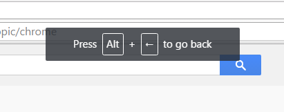
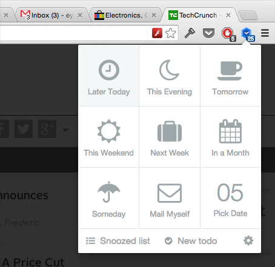
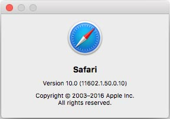
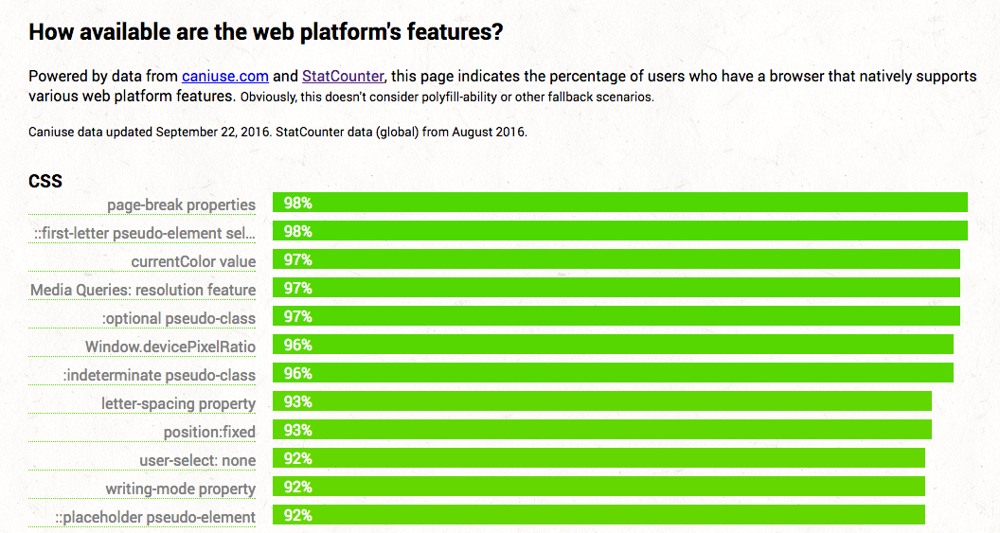
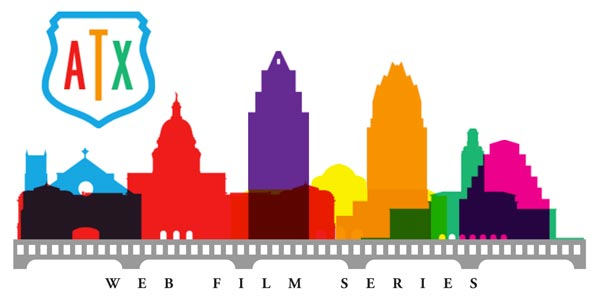

Bleeding Edge Web: September 2016
Announcements
News from the Bleeding Edge
— Brian Moeskau (@bmoeskau)
Docker as a Strategic Enabler for Dev Teams
(slides)
— Aater Suleman (@futurechips)
News from the
Bleeding Edge
Browser Pop Quiz
Last version check — August 24, 2016:
Browser Pop Quiz
As of September 24, 2016:
Chrome 53
New "feature": Backspace no longer navigates back
(Also disabled in Safari since v6)

Same tab "snooze" idea for Chrome

Safari 10
It's official!

TypeScript 2.0
- Released September 22
- Simplified type declarations: npm install --save @types/lodash
- New readonly modifier, non-nullable types
- Enhanced control flow analysis
Powered by data from caniuse.com and StatCounter, this page indicates the percentage of users who have a
browser that natively supports various web platform features.

Thought- and discussion-provoking films about the Web, Design, and Technology
- Documentary double-feature followed by panel discussion
- Oct 3, 6-10pm at Alamo S. Lamar
- Tickets $15 ($10 with code BleedingEdgeWeb)

Thanks!
 ←
→
←
→
/
#